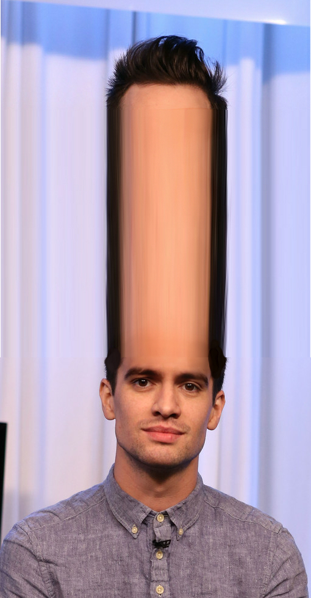

Big Brain Brandon Urie
Structure
The bone of the forehead is the squamous part of the frontal bone. The overlying muscles are the occipitofrontalis, procerus, and corrugator supercilii muscles, all of which are controlled by the temporal branch of the facial nerve.
The sensory nerves of the forehead connect to the ophthalmic branch of the trigeminal nerve and to the cervical plexus, and lie within the subcutaneous fat. The motor nerves of the forehead connect to the facial nerve. The ophthalmic branch of the trigeminal nerve, the supraorbital nerve, divides at the orbital rim into two parts in the forehead. One part, the superficial division, runs over the surface of the occipitofrontalis muscle. This provides sensation for the skin of the forehead, and for the front edge of the scalp. The other part, the deep division, runs into the occipitofrontalis muscle and provides frontoparietal sensation.
Blood supply to the forehead is via the left and right superorbital, supertrochealar, and anterior branches of the superficial temporal artery.
Function
Expression
The muscles of the forehead help to form facial expressions. There are four basic motions, which can occur individually or in combination to form different expressions. The occipitofrontalis muscles can raise the eyebrows, either together or individually, forming expressions of surprise and quizzicality. The corrugator supercilii muscles can pull the eyebrows inwards and down, forming a frown. The procerus muscles can pull down the centre portions of the eyebrows.
Wrinkles
The movements of the muscles in the forehead produce characteristic wrinkles in the skin. The occipitofrontalis muscles produce the transverse wrinkles across the width of the forehead, and the corrugator supercilii muscles produce vertical wrinkles between the eyebrows above the nose. The procerus muscles cause the nose to wrinkle.
Society and Culture
In physiognomy and phrenology, the shape of the forehead was taken to symbolise intellect and intelligence. "Animals, even the most intelligent of them,", wrote Samuel R. Wells in 1942, "can hardly be said to have any forehead at all, and in natural total idiots it is very diminished".
Pseudo-Aristotle, in Physiognomica, stated that the forehead is governed by Mars. A low and little forehead denoted magnanimity, boldness, and confidence; a fleshy and wrinkle-free forehead, litigiousness, vanity, deceit, and contentiousness; a sharp forehead, weakness and fickleness; a wrinkled forehead, great spirit and wit yet poor fortune; a round forehead, virtue and good understanding; a full large forehead, boldness, malice, boundary issues, and high spirit; and a long high forehead, honesty, weakness, simplicity, and poor fortune.
In fighting, slamming one's forehead into one's opponent is termed a Headbutt.